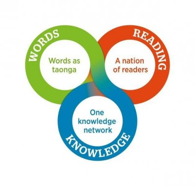

Te whakarite mō anamata: ngā tohutohu rautaki tauira ki te tau 2030
He tuhinga whakawhitiwhiti hōngongoi 2016.
Kōkiri, kōkiri, kōkiri!
Whakarongo ake au ki ngā reo o te motu
E karanga mai ana
Huakina mai ngā tatau o tō whare
Kia mahi tahi tātou, kia inu ai mātou
I Te Puna Mātauranga o Aotearoa
The message from the people
Clearly asks us To open our doors
So that we may work together
And share the information
Held in the National Library of New Zealand
This consultation document is provided in both te reo Māori (below) and English.
Kupu whakataki
E marohi ana Te Puna Mātauranga o Aotearoa i ngā tohutohu rautaki māia, hao nui hoki e anga atu ana ki te tau 2030. Ko tā mātau e tūmanako ana mō Aotearoa kia tōnui a Aotearoa, ā, e taea ana e ngā tāngata katoa o Aotearoa ngā wāhi katoa o ngā mōhiotanga; he torotoro i te iwi kia ngahau te pānui; he whakanui hoki i ngā kupu hei wāhanga whai uara o tō tātau tuku ihotanga kanorau. Kua whakatakotohia e mātau tēnei mānuka ki te whakatinana mai i ngā kaupapa ake o Te Puna Mātauranga hei whakarangatira i te ao ahurea, ōhanga hoki o Aotearoa me ana tūhonohono me ētahi atu whenua.
Kei te hiahia mātau i tō urupare mō ngā tohutohu rautaki kua rārangihia e mātau, ngā tirohanga mō ō wāhi kaingākau rautaki ngātahi, pūkenga hoki, me ngā huatau mō ngā whai wāhitanga mahi tahi hei huri i ngā mōhiotanga hei uara.
Te huri i ngā mōhiotanga hei uara
I te tau 2015, i whakaritea e Te Puna Mātauranga he rangahau hōpara mā te rāngai whai pānga whare pukapuka, ahurea hoki hei āwhina ki te waihanga i tō tātau aronga rautaki atu ki te tau 2030. I whakahaerehia e mātau ētahi awheawhe kaimahi me ngā hui whakamārama i te taha o ngā kaimahi puta noa i te kāwanatanga, me te whakatutuki i tētahi arotakenga papamahi o nga raraunga matua, wheako hoki o Aotearoa me te ao.1
I whakaū ēnei mahi i tā mātau kaupapa ake o Te Puna Mātauranga, ā, me ā mātau mahi ki te kohi, te tiaki me te tiritiri i ngā tuhinga tuku iho o Aotearoa, te tautoko i ngā whare pukapuka puta noa i Aotearoa me te mahi tahi me ētahi atu.2 Me te aha, i āta kīia anō ētahi atu whakapātari kōtuitui mō Aotearoa, tae atu ki:
- Te tango i ngā tauārai hei tiri mōhiotanga, huatau hoki mēnā e ngana ana tātau ki te whakapiki auahatanga, te rapu rongoā ki ngā raruraru tūturu o te ao me te whakaputa uara ōhanga;
- Te whakapai ake i te reo matatini ki te whakapiki i te whai wāhi ki te ōhanga whakaputaranga nui, ā.
- Te whakarite i ngā take e pā ana ki te tūhonohono pāpori, whakahāweatanga hoki e pupū mai ana i tētahi taupori ahurea kanorau, e āhei ai tātau ki te whai wāhi ki ngā hua o te kanorautanga, pēnei i te pikitanga o te whakaputaranga me tētahi ahurea tuku iho rerekē.
Ko ēnei whakapātari ngā kaikōkiri mō ā mātau urupare rautaki e marohitia ana mō te mōhiotanga, pānui, kupu hoki.

Ko tā mātau e whai ana he whakapiki i ō mātau kaha o Te Whare Pukapuka o Aotearoa ki te waihanga urupare rautaki e hāngai ana ki Aotearoa ka whakawhanake haere i roto i te wā kia pai mō tētahi ao hurihuri. Hei whakatutuki i tēnei me titiro tātau ki ngā paerangi e toru: pēhea te whakapai haere tonu i ā mātau mahi i tēnei wā; pēhea te āta haumi ki ngā hua me ngā ratonga o āpōpō i roto i te pae tūrua; pēhea te hōpara me te auaha ki ngā āhuatanga hurihanga kia tūturu ai te pānga mauroa.
Kei te tono ā mātau kaiwhaipānga mai kia kaha ake tō mātau kitea mai, ā, me te ārahi mā te mahi tahi, rangahau me te panoni pūnaha. Ki te mahi tautahi, ka whāiti rawa te kaha o Te Puna Mātauranga ki te whakatutuki rerekētanga. Kāore e taea e tētahi tari kāwanatanga kotahi, kaupapa here, rāngai rānei te whakarite, te rongoā rānei i ngā raruraru matatini piki haere e pā mai ana ki te motu.
He maha ngā whakahaere, ngā tāngata e mōhio ana mātau kei te tino ngākaunui ki te whakapātari e rārangi ana i tēnei tuhinga. E pūmau ana mātau ki te mahi i ngā tikanga auaha me ngā pātui tūturu, hou hoki puta noa i te kāwanatanga, te rato ā-aroha, te rāngai kaupapa aroha me te rāngai tūmatanui kia puta ai ngā tino rerekētanga mō te iwi o Aotearoa. Kei te hiahia mātau i ō whakaaro mō ā mātau tohutohu rautaki, ā, mēnā e hiahia ana koe, tō whakahaere rānei ki te whakauru ki tētahi tikanga hou o te mahi tahi.
Questions/Ngā pātai
He mea waiwai tō urupare hei waihanga i tō mātau huarahi atu ki 2030, e whakarite ana e hāngai ana ā mātau kaupapa, ratonga hoki e marohitia ana ki ngā kaingākautanga, hiahia, kaha hoki o te hunga e paheko ana ki a mātau.
Tohutoro
1. Positioning the National Library for the future: examples of innovations in library management overseas (PDF 368KB); Sue Sutherland, 'Stakeholder interviews report' (PDF 520KB). November 2015
In this section
Whatunga mōhiotanga kotahi
Te huri i te āhua o tā tātau tiri mōhiotanga hei whakaū i te urunga māmā o ngā tāngata o Aotearoa ki ngā kohinga me ngā rangahau tūmatanui e puritia ana.
He whenua kaipānui
Te waihanga i tētahi whenua kaipānui whai pūkenga mō te ao hou hei waihanga i te whakahonohono pāpori, whai wāhitanga me te oranga.
Ko ngā kupu hei taonga
Ka uara ngā tāngata o Aotearoa i ngā kupu, oro me ngā pikitia i waihangatia, i kohia hoki hei tuhinga tuku iho mā tātau, kia whiwhi mōhio ai tātau mai i neherā me te whakahihiri i tō tātau anamata.
Last Updated
Page last updated: